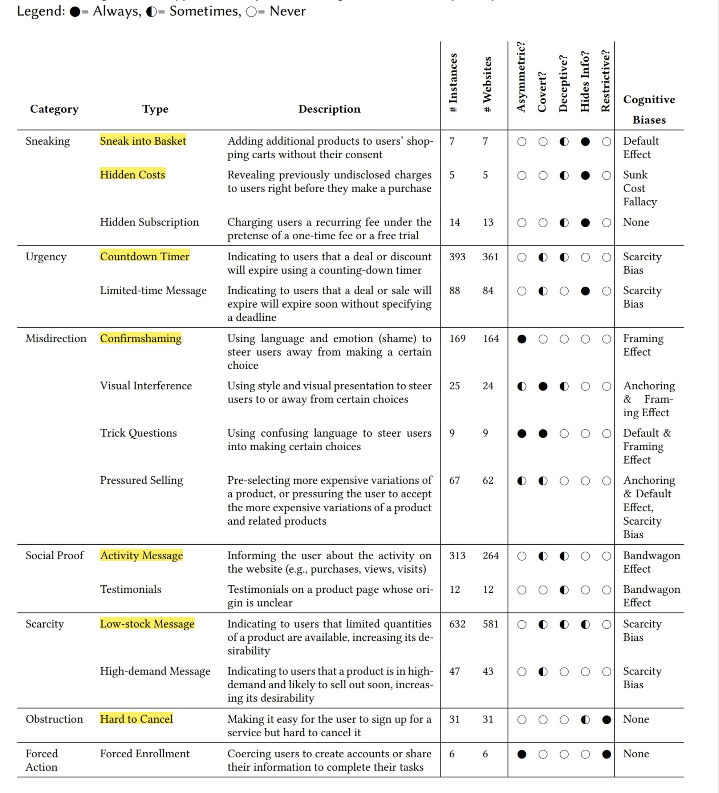
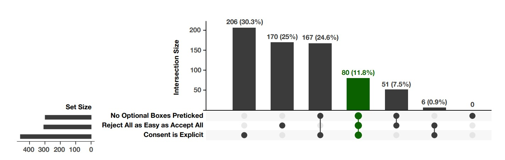

Web Engineering Seminar in the Summer Semester 2023
Dark Patterns
Akshay Ghavale
Akshata Mithari
Technische Universität Chemnitz
Chemnitz, Germany
1. Introduction [Written by Akshay Ghavale]
Dark patterns are design strategies used in user interfaces with the goal of deceiving, controlling, or
pressuring users into activities they may not want to take. These patterns profit the companies or
organizations that created the interfaces by taking advantage of user behavior, cognitive biases, and human
psychology. They are available on a variety of digital platforms, including as websites, mobile apps, and
software downloads.
Harry Brignull, a user experience (UX) designer, first used the term "Dark Patterns" in 2010. He defined
dark patterns as "Dark Patterns are tricks used in websites and apps that make you do things that you
didn't mean to, like buying or signing up for something. The purpose of this site is to spread awareness and
to shame companies that use them".[1] To spread awareness and promote ethical design
principles, Brignull
founded the website darkpatterns.org, which acts as a collection of many dark designs.
According to Brignull, dark patterns are deceptive techniques employed in websites and applications that
manipulate users into taking actions they did not intend to take. These actions often result in unintended
purchases, subscriptions, or sign-ups. Brignull's objective with darkpatterns.org [1] is
to increase awareness about these practices and draw attention to companies that utilize such design
strategies.
2. Existing definitions of Dark Patterns [Written by Akshata Anil
Mithari]
Brignull's preliminary work sparked a wave of academic research which attempted to define and describe dark
patterns.
Researchers discovered four aspects of Dark Pattern description from 19 definitions. [6].
The first aspect of dark pattern definition is to examine the user interface features that have the
potential to influence users.
According to various definitions, these user interfaces are either design "tricks" or "misleading"
interfaces.
Different papers use terms like "coercing, steering, or deceiving" to identify dark patterns, while others
call them "obnoxious, coercive, or deceitful."[6].
The second facet of dark pattern definitions focuses on how they effectively influence users. These
definitions, taken together, define 13 various ways in which user interfaces might
exert influence. Some descriptions of dark patterns characterize them as undermining user intent or
preferences, while others portray them as "tricks" that fool users or diminish their liberty.
Multiple definitions specify various mechanisms for impacting users,such as manipulation, user intent
subversion, and deceptive approaches. Furthermore, other definitions of dark patterns describe
them as "attacking," "exploiting," or "manipulating" users. [6].
The third aspect of defining dark patterns pertains to the role of the user interface designer. In some
definitions, it is highlighted that dark patterns involve the designer exploiting
their specialized knowledge of human behavior.Certain definitions, on the other hand, specifically declare
that designers intentionally choose dark patterns to achieve a certain goal. [6].
The fourth aspect of defining dark patterns revolves around the benefits and harms arising from a user
interface design. According to certain definitions, a dark pattern is characterized by
its intention to benefit an online service. In contrast, other definitions emphasize the harm inflicted upon
users as a defining characteristic of dark patterns.[6].
3. Difference between Dark Patterns and poor usability/UIX design. [Written
by Akshata Anil
Mithari]
Poor UX design refers to design decisions and implementation that lead to a negative user experience. It may
contain elements such as confusing navigation, poor visual hierarchy, long loading times,
or difficult interactions. Poor UX design is usually unintended and can be due to a lack of awareness of
user demands, lack of resources, or other issues.
Dark patterns, on the other hand, are purposely created components or strategies that are used to deceive,
manipulate, or exploit users. They are designed to persuade people to perform actions they
may not wish to perform or to deceive them into disclosing sensitive information. Dark patterns are
intentionally designed to favour the business or service provider over the user's best interests.
In conclusion, the key distinction between poor UX design and dark patterns is intent. Bad UX design is
typically unintentional and results from design defects or shortcomings whereas dark patterns
are purposefully created to deceive or manipulate users for the benefit of the business or service provider.
4. Taxonomies of Dark Pattern. [Written by Akshata Anil
Mithari]
4.1 Sneaking
Sneaking refers to a category of dark pattern that tries to misrepresent user behavior or hide/delay
information which users would likely object to if it were made available to them.
[2].
There are three types of the Sneaking dark pattern:
Sneak into Basket, Hidden Costs, and Hidden Subscription
4.1.1 Sneak into basket
The 'Sneak into Basket' is a type of dark pattern which adds additional products to users' shopping baskets
without their approval, typically promoting the added products as
'bonuses' and 'essential'. As shown in the figure 1 [2]Figure 1: Sneak into Basket on avasflowers.net. Despite the fact that no greeting cards
are requested, one for $3.99 is automatically added.
[2].
4.1.2 Hidden Costs
The 'Hidden Costs' dark pattern exposes users to new, additional, and unusually expensive charges immediately
before they make a purchase.[2]Figure 2: Hidden Costs on proflowers.com. The Care & Handling fee ($2.99) is stated on
the final step[2].
4.1.3 Hidden Subscription
The dark pattern 'Hidden Subscription' costs users a recurring subscription under the disguise of a one-time
cost or a free trial. Users are often unaware of the recurring fee until they are charged several days
or months after their purchase, if at all. [2]Figure 3: Hidden Subscription. The website fails to disclose that the Advantage service
is an annual subscription worth $89
unless the user clicks on Learn More [2].
4.2 Urgency
The term 'urgency' refers to a type of dark pattern that imposes a time limit on a sale or deal, hence
boosting up user decision-making and purchases. Urgency dark patterns take advantage of users' scarcity
bias,
making discounts and offers more appealing than they would otherwise be, and communicating that inaction
will result in missing out on possible savings.
There are two types of the Urgency dark pattern:
Countdown Timers and Limited-time Messages [2].
4.2.1 Countdown Timers
The 'Countdown Timer' is a deceptive design that visually symbolizes a deadline by displaying a steadily
decreasing time display until the deadline is reached. [2]Figure 4:Countdown Timer on mattressfirm.com. The header displays a Flash Sale where
the majority of
discounted products remain the same on a day-to-day basis. [2].
4.2.2 Limited-Time Message
The 'Limited-time Message' dark pattern is a static urgency message without a deadline. Websites conceal
information from users and thereby mislead the nature
of the offer by failing to state the deadline.[2]Figure 5: Limited-time Message on chicwish.com. The website
claims the sale will end ‘soon’ without stating a deadline.[2].
4.3 Misdirection
Dark patterns in the 'Misdirection' category employs visuals, language, and emotions to lead users in a
particular direction or divert their attention from a specific option.[2].
There are four types of the Misdirection dark pattern:
Confirmshaming, Trick Questions, Visual Interference and Pressured Selling [2].
4.3.1 Confirmshaming
The 'Confirmshaming' dark pattern employs language and emotion to discourage users from selecting a particular
option. Confirmshaming was especially common in popup dialogs that requested
users' email addresses in exchange for a discount, when the option to decline the offer—which the website did
not want users to choose—was portrayed as a humiliating alternative. [2]Figure 6: Confirmshaming on radioshack.com.
The option to dismiss the popup is framed
to shame the user into avoiding it.
[2].
4.3.2 Visual Interference.
The 'Visual Interference' dark pattern uses style and visual presentation to persuade users towards particular
options while discouraging alternatives.[2]Figure 7: Visual Interference on greenfingers.com. The option to opt
out of marketing communication is grayed, making it seem unavailable even though it can be clicked.[2].
4.3.3 Trick Questions.
The 'Trick Questions' pattern uses deceptive or ambiguous terminology to trick users into opting for particular
choices.
Trick Questions takes advantage of the default and framing effect cognitive biases in users, making them more
prone to a choice they mistakenly assume to be compatible with their
preferences.[2]Figure 8: Trick Questions on newbalance.co.uk. Opting out of marketing
communication requires ticking the checkbox.[2].
4.3.4 Pressured Selling.
The 'Pressured Selling' dark pattern describes defaults or high-pressure approaches that lead users to spend
money on a more costly variant of a product or related products (cross-selling).[2]Figure 9: Pressured Selling on
1800flowers.com. The most
expensive product is the default.[2].
4.4 Social Proof
Individuals assess the correct action and behavior for themselves in a given scenario based on the action
and behavior of others, according to the social proof principle. The 'Social Proof' dark pattern leverages
this influence to speed up user decisions and purchases,
taking use of the bandwagon effect cognitive bias.[2].
There are two types of the Social Proof dark pattern:
Activity Notifications and Testimonials of Uncertain Origin.
4.4.1 Activity Notifications
The 'Activity Notification' dark pattern is a quick, frequently recurring, and attention-grabbing message
appearing on product pages to highlight other users' activity.[2]Figure 10: Activity Notification on tkmaxx.com. The message indicates how many people
added the product to the cart in
the last 72 hours. [2].
4.4.2 Testimonials of Uncertain Origin.
The dark pattern 'Testimonials of Uncertain Origin' refers to the use of customer testimonials who's source or
how they were collected and made is unclear.[2]Figure 11:Testimonials of Uncertain Origin on
coolhockey.com. The same testimonials on ealerjerseys.com with different customer names.[2].
4.5 Scarcity
Scarcity refers to the category of dark patterns that indicate a product's limited stock or great
popularity, thereby enhancing its perceived worth and desirability.[2].
There are two types of the Scarcity dark pattern: Low-stock Messages and High-demand Messages.
4.5.1 Low-stock Messages
The 'Low-stock Message' dark pattern notifies users when a product is in limited availability. [2]Figure 12: Low-stock on orthofeet
.com. Appears for all products.[2].
4.5.2 High-demand Messages
The High-demand Message dark pattern informs users that a product is in great demand and will likely sell out
soon. [2]Figure 13: High-demand Message on fashionnova.com.
The message appears for all products in the cart.[2].
4.6 Obstruction
Obstruction refers to the group of dark patterns that make a specific action more difficult than it should
be in order to discourage users from performing that action. [2].
There is one type of the Obstruction dark pattern: Hard to Cancel
4.6.1 Hard to Cancel
Obstruction makes it simple for people to sign up for recurring subscriptions and memberships, but also makes it
difficult for them to cancel the subscriptions later. [2]Figure 14: Hard to Cancel on savagex.com. The website discloses
upfront that the recurring service can only be canceled through
customer care.[2].
4.7 Forced Action
The term 'Forced Action' refers to a type of dark pattern that requires users to carry out additional and
tangential activities in order to fulfill their tasks.[2].
There is one type of the Forced Action dark pattern: Forced Enrollment.
4.7.1 Forced Enrollment
This dark pattern explicitly induces users into signing up for marketing communications or creates accounts in
order to obtain users' personal information.[2]Figure 15:Forced Enrollment on musiciansfriend.com.
Agreeing to the terms of use also requires agreeing
to receive emails and promotions.[2].
5. Dimensions used by taxonomies of dark patterns [Written by Akshata Anil
Mithari]
5.1 Asymmetric.
Asymmetric dark patterns place unequal weights on the user's choices. The alternatives that benefit the company
are prominently shown, whilst the ones that benefit the user are
often hidden behind numerous clicks or hidden from view by modifying the design and placement of the choice.[6].
5.2 Covert.
Covert dark patterns influence a user's decision or outcome while obscuring the influence mechanism from the
user. Some dark designs achieve this feature through
the use of cognitive biases, whereas others employ style as well as color to steer users.[6].
5.3 Deceptive.
Deceptive dark patterns instill false beliefs in users through affirmative misstatements, misleading assertions,
or omissions[6].
5.4 Information hiding.
Information hiding dark patterns hide or delay the presentation of important information to users.[6].
5.5 Restrictive.
Restrictive dark patterns limit or remove the options available to users.[6].
6. Regional, cultural and language differences in dark patterns [Written by
Akshata Anil
Mithari]
Dark patterns are design decisions or strategies used in user interfaces to influence or trick users into
performing behaviors they do not wish to perform. These patterns may vary among areas according to cultural
values, legal regulations, and user expectations.
Cultural and regional differences might influence how some design methods are seen and tolerated. What is
accepted or manipulative in one culture or location may be considered unethical or deceitful in another.
Specific colors, symbols, or phrases employed in dark patterns, for example, may have various implications
or meanings in different cultures, resulting in differences in their effectiveness.
Language also has an important function. Dark patterns rely largely on strong communication and
comprehension between the user and the interface. To be effective, the wording, phrasing, or linguistic
approaches utilized in dark patterns may need to be adjusted to other languages.
In specific language circumstances, certain linguistic nuances or cultural references. may be used to create
compelling or deceptive messaging.
7. Existing Studies [Written by Akshay Ghavale]
7.1 Study 1
"Several studies have been conducted to investigate the phenomenon of dark patterns in user interfaces. One
notable study titled 'Dark Patterns at Scale : Findings from a Crawl of 11K
Shopping Websites' [2] explored the prevalence of dark patterns on
shopping websites. In their research, the authors analyzed a vast dataset consisting of approximately 53,000
product pages from around 11,000 shopping websites. Through their analysis, they successfully identified a
total of 1,818 instances of dark patterns.
However, it is important to note that these numbers represent the lower bound and there may be a higher
number of dark patterns that were not captured in their analysis. Despite this limitation, the study
provides valuable insights into the widespread use of dark patterns in e-commerce.
In addition to identifying dark patterns, researchers also discovered 22 third-party entities that enable
shopping websites to create and implement these deceptive design techniques. These findings shed light on
the ecosystem surrounding dark patterns and the role of external entities in facilitating their deployment.
Various taxonomies have primarily focused on dark patterns in web interfaces, but researchers have also
explored their presence in specific application domains. For example, Lewis conducted an analysis of design
patterns in web, mobile applications, and games, identifying successful patterns like 'Pay To Skip' in-app
purchases that allow users to skip game levels. Similarly, Greenberg et al. examined dark patterns and
'antipatterns' that exploit users' spatial relationship with digital devices, introducing patterns such as
'Captive Audience' and 'Attention Grabber' that manipulate users' attention. Additionally, Mathur et al.
discovered undisclosed affiliate marketing practices on social media platforms, a form of the 'Disguised
Ads' dark pattern. These studies contribute to a broader understanding of dark patterns and their various
manifestations in different application domains.

Table 1: Categories and types of dark patterns along with their description,
prevalence, and definitions.
[2]
Analyses revealed 15 types of dark patterns contained in 7 broader categories. Where applicable,
we use the dark pattern labels proposed by Gray et al. [3] and Brignull [1] to describe these types
and categories. Table 1 summarizes our findings, highlighting the number of separate
instances of
dark patterns found for each type.
7.2 Study 2
One study mentioned in paper titled "Dark Patterns
after the GDPR: Scraping Consent Pop-ups and Demonstrating their Influence" is a 4-year longitudinal study
that examined the impact of the revised ePrivacy
directive on cookie placement. The study found that 49% of websites placed cookies before receiving consent,
28% of websites did not provide any consent mechanism, and the percentage of websites violating the
directive remained constant over the course of 4 years, indicating that the policy was ineffective.
Regarding the GDPR, industry and academia have been monitoring its effects since its introduction in May
2018. A study by Degeling et al. found that the number of privacy policies on websites increased in some EU
member states by 15.7% after the introduction of the regulation. Another study by Sanchez-Rola et al.
evaluated tracking behavior on high-traffic websites and found that the GDPR affected EU and US sites in the
same way, reducing tracking through consent management platforms but not eliminating personal data
collection entirely.
The passage also introduces a specific study that focused on consent management platforms (CMPs) and their
interface designs after the GDPR. The researchers developed a web scraper to collect data about the visual
elements, interaction design, and text content of the five most commonly used third-party CMPs in the top
10,000 most-visited websites in the United Kingdom. The study found that implicit consent was common among
the websites, and many actions that websites counted as consent did not meet the requirements of explicit
consent under the GDPR. It was also observed that rejecting all tracking was more difficult than accepting
it on the majority of sites, and pre-ticked boxes were often used, which is prohibited by the GDPR.

Figure 16: UpSet diagram [16, 36] of sites by adherence to three core conditions of
EU
law. Sites meeting all three in green
[4]
Figure 16, illustrates the interaction between the requirements for a website to be
considered minimally compliant. These requirements include not having any pre-selected optional boxes,
ensuring that rejecting is as easy as accepting, and obtaining explicit consent. Only Quantcast, among the
CMP vendors examined, has a significant proportion (26.2%)
of CMPs that meet these basic requirements. Crownpeak, on the other hand, was found to have zero CMPs
meeting these requirements. This discrepancy can be largely attributed to the absence of implicit consent in
Quantcast's CMPs and their lower prevalence of pre-selected boxes.
Overall, the studies highlight various challenges and shortcomings in the implementation and compliance with
European privacy regulations, indicating the need for further improvements to protect individuals' privacy
rights on the web.
8. Empirical Experiment [Written by Akshay Ghavale]
In the paper titled "Towards the Identification of Dark Patterns: An Analysis Based on End-User Reactions"
[5] researchers aimed to investigate end-users' susceptibility to different types of dark
patterns and
understand
the factors contributing to their victimization. The study was conducted in two phases: a self-administered
questionnaire and an experiment. In the questionnaire phase, participants from the UX or IT industry were
selected, along with users who had limited exposure to dark patterns. Five variables (frequency of
occurrence, trustworthiness, level of frustration, misleading behavior, and physical appearance of the user
interface) were identified as relevant for identifying dark patterns. The questionnaire included examples of
each dark pattern, and participants rated the variables on a Likert scale. Correlations between the
variables were analyzed using exploratory factor analysis. The experiment phase involved 10 participants
performing tasks related to Roach Motel and Forced Continuity dark patterns, followed by open-ended
questions and variable rating. The results revealed participants' limited ability to identify dark patterns,
with Forced Continuity being the most identified and Roach Motel the least identified. Significant
correlations were found between the identification variables. However, no correlations were observed between
the variables of the least and most identifiable dark patterns.
In the self-administered questionnaire phase, participants from the UX or IT industry were selected,
including users with limited exposure to dark patterns. The questionnaire included examples of each dark
pattern and assessed the variables of frequency of occurrence, trustworthiness, level of frustration,
misleading behavior, and physical appearance of the user interface. Participants rated these variables on a
Likert scale, and their responses were collected and analyzed using exploratory factor analysis.
In the experiment phase, 10 participants, not belonging to the UX or IT industries, performed tasks related
to Roach Motel and Forced Continuity dark patterns. The participants' actions, time taken to complete tasks,
and willingness to provide personal information were observed. Open-ended questions were asked to gather
participants' reactions and opinions on the tasks. Participants also rated the identification variables for
each task.
Analysis of the self-administered questionnaire phase revealed that most participants claimed to have never
been tricked by websites, yet they were victims of at least one dark pattern. Forced Continuity was the most
identified dark pattern, while Roach Motel was the least identified. Significant correlations were found
between the identification variables, such as level of frustration and frequency of occurrence, frequency of
occurrence and trustworthiness, and physical appearance and trustworthiness.
In the experiment phase, participants struggled to locate the deactivation option on Facebook (Roach Motel),
and the process took longer than expected (steps are shown in Figure 17). For the Forced Continuity task on
Audible's website, participants
found it unnecessary to provide credit card details but were still willing to proceed due to the brand's
reputation (as shonwn in Figure 18). No significant correlations were found between the variables of the
least and most identifiable
dark patterns.
Figure 17: The location of the deactivation option is mentioned within a seemingly
unrelated tab section. Moreover, the steps
for a simple action like deactivating a Facebook account, which can be achieved in two or three steps,
is made complicated by
involving six to eight steps.
[5]Figure 18: The Audible website offers a free trial but on clicking the Call-to-Action
in
(a), the website proceeds to ask for the
user’s credit/debit card details.
[5]
This research highlights the limited ability of end-users to identify dark patterns, with significant
variations in identification rates among different patterns. The identified variables, such as frequency of
occurrence, trustworthiness, level of frustration, misleading behavior, and physical appearance, play
crucial roles in the identification process. The findings emphasize the need for increased awareness,
improved user interfaces, and effective countermeasures to mitigate the impact of dark patterns on
end-users. Further research can focus on developing strategies to enhance user awareness and empower
individuals to recognize and resist dark patterns.
9. Demo [Written by Akshata Anil
Mithari]
In our study, we developed a sample website (as shown in Figure 19) incorporating various types of dark
patterns from different
taxonomies.
Users were presented with this demo and then asked to provide feedback through a Google Form. The form
captured
their experiences and perceptions of the website. The report includes screenshots of the user responses (as
shown in Figure 20), as
well
as
relevant pictures from the website illustrating the implemented dark patterns. These findings provide
valuable
insights into user interactions and responses to dark patterns in a controlled environment.
Figure 19: Demo Website Screenshots
Figure 20: Google Form Screenshots of Responses
9. Conclusion [Written by Akshay Ghavale]
To summarize, dark patterns are deceptive design strategies intended to manipulate and influence online user
behavior. They are meticulously designed to exploit psychological biases and nudge people into activities
they may not have meant or desired. Dark patterns can be found on e-commerce websites, social media
platforms, and mobile applications. Dark patterns are troubling because they can have unexpected
implications such as privacy violations, higher spending, and decreased user liberty. Companies can push
users towards choices that serve their own interests, frequently at the expense of the users' best
interests, by employing strategies such as hidden costs, confusing interfaces, and false information.
Understanding and acknowledging dark patterns is essential for users to make educated online decisions and
maintain their rights. Companies and authorities must follow ethical design principles in order to encourage
transparency and accountability in user experiences. We can build a digital environment that respects users'
autonomy and supports their well-being by encouraging user empowerment, informed consent, and true choice.
Combating dark patterns, in the end, requires a collaborative effort from users, designers, and legislators.
Users should remain watchful, learn about popular dark pattern methods, and report cases of deceptive
design. Designers and businesses must prioritize user trust and ethical standards, ensuring that their
design choices are in line with user demands and preferences. Regulators can play an important role in
creating rules and enforcing regulations that promote fair and transparent design processes, holding those
who use deceptive strategies accountable. We can work toward a digital ecosystem that respects user freedom,
encourages trust, and empowers individuals to make informed digital choices by raising awareness, supporting
ethical design, and enforcing relevant laws.
[2] A. Mathur et al., “Dark Patterns at Scale: Findings from a Crawl of 11K
Shopping Websites,” Proceedings of the ACM on Human-Computer Interaction, vol. 3, no. CSCW, pp. 1–32, Nov.
2019,.
doi: https://doi.org/10.1145/3359183
[3] C. M. Gray, Y. Kou, B. Battles, J. Hoggatt, and A. L. Toombs, “The Dark
(Patterns) Side of UX Design,” Proceedings of the 2018 CHI Conference on Human Factors in Computing Systems
- CHI ’18, pp. 1–14, 2018 doi:
https://doi.org/10.1145/3173574.3174108
[4] M. Nouwens, I. Liccardi, M. Veale, D. Karger, and L. Kagal, “Dark
Patterns
after the GDPR: Scraping Consent Pop-ups and Demonstrating their Influence,” 2020,
doi:
https://doi.org/10.1145/3313831.3376321
[5] A. M. Bhoot, M. A. Shinde, and W. P. Mishra, “Towards the Identification
of
Dark
Patterns: An Analysis Based on End-User Reactions,” IndiaHCI ’20: Proceedings of the 11th Indian Conference
on
Human-Computer Interaction, Nov. 2020.
doi: https://doi.org/10.1145/3429290.3429293
[6] Arunesh Mathur, Mihir Kshirsagar, and Jonathan Mayer. 2021. What Makes a
Dark
Pattern... Dark? Design Attributes,
Normative Considerations, and Measurement Methods https://doi.org/10.1145/3411764.3445610